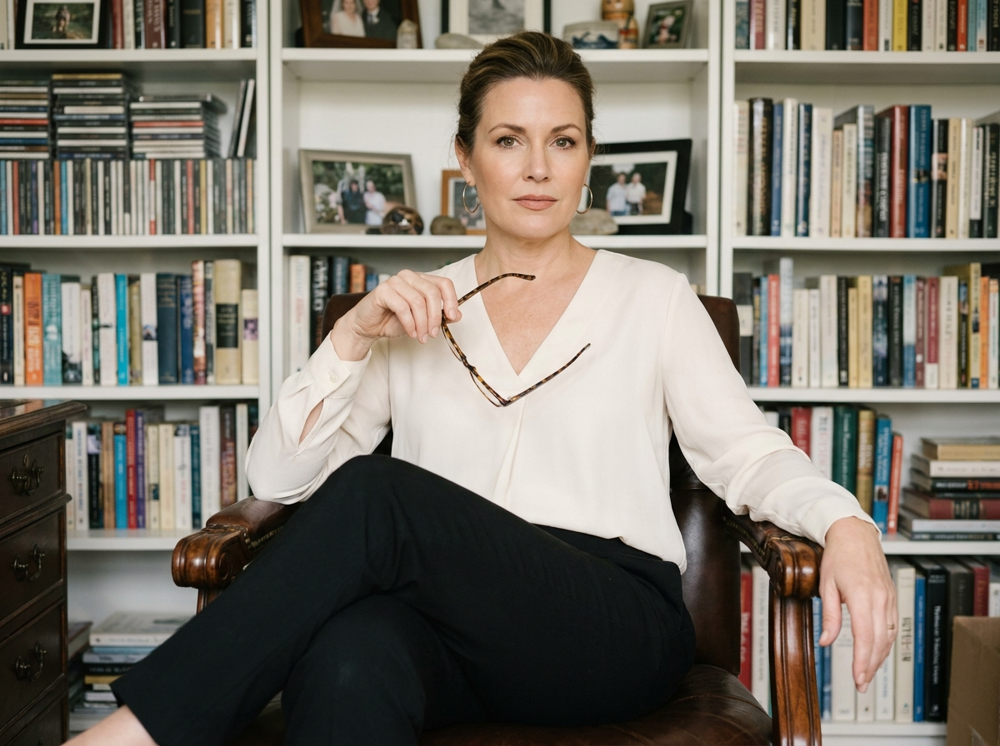
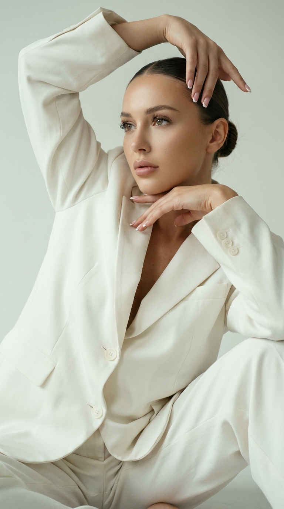
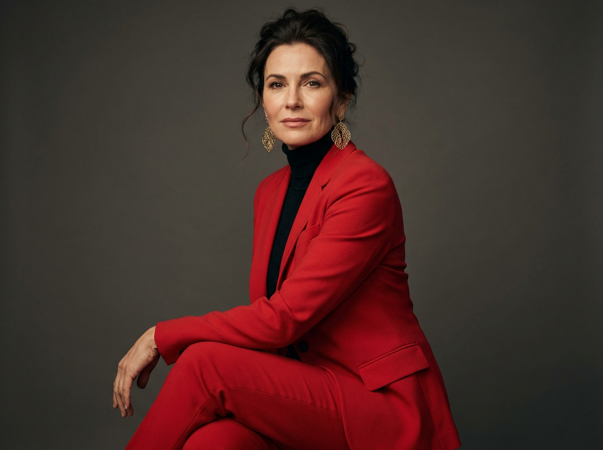
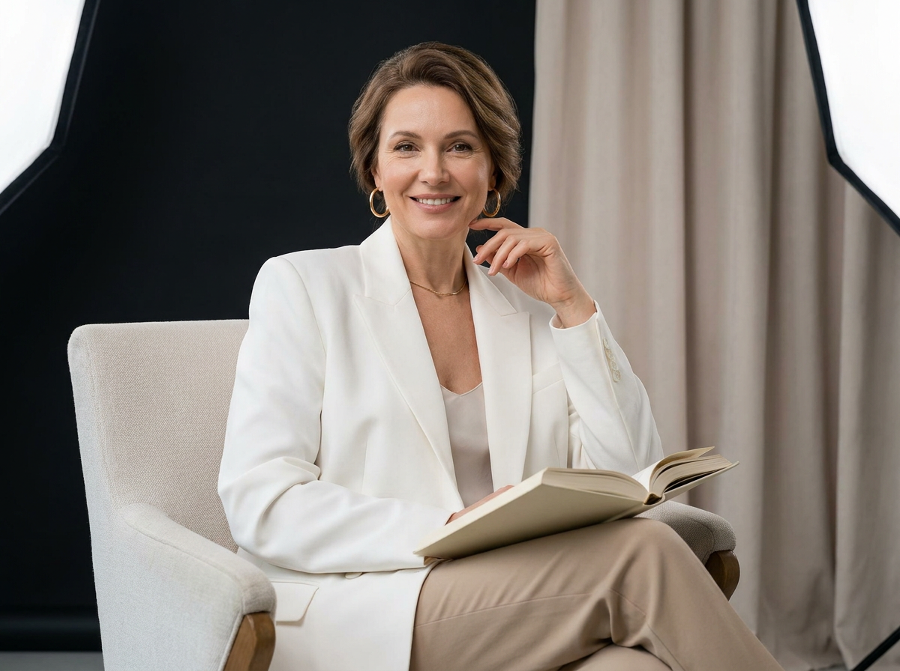
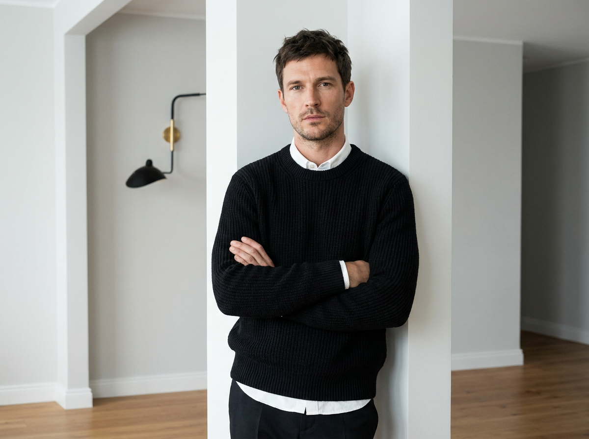
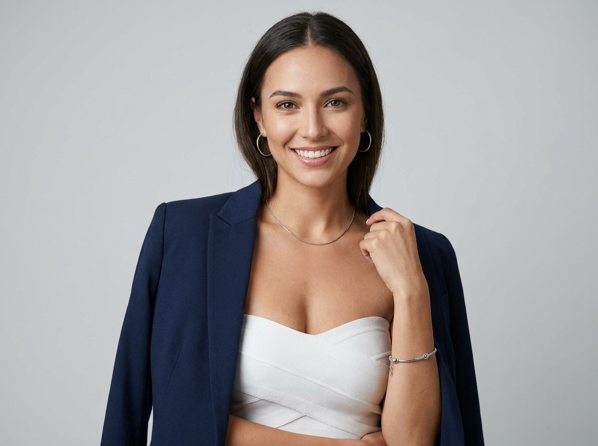
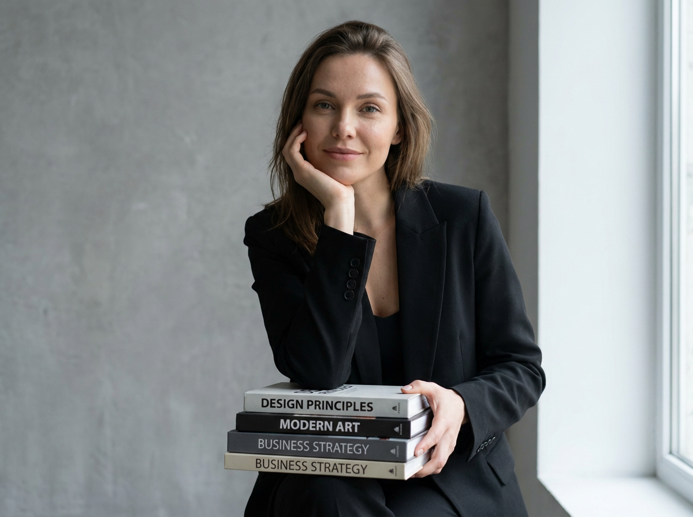
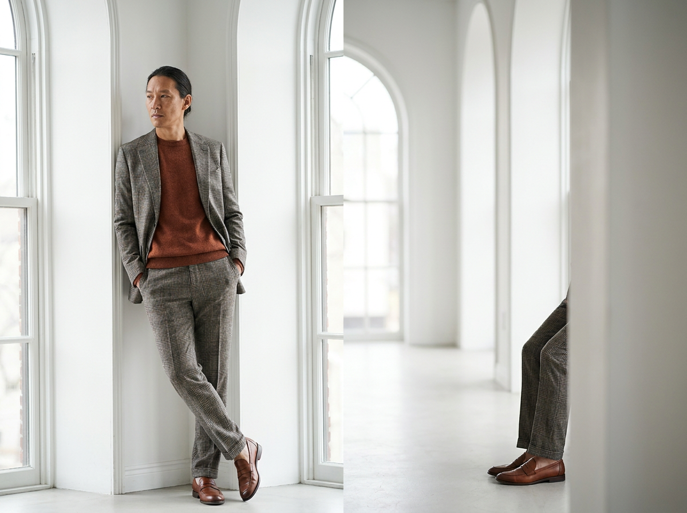
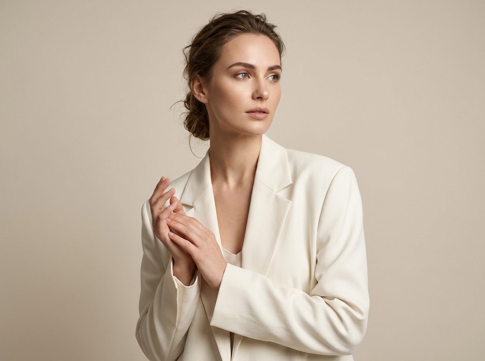
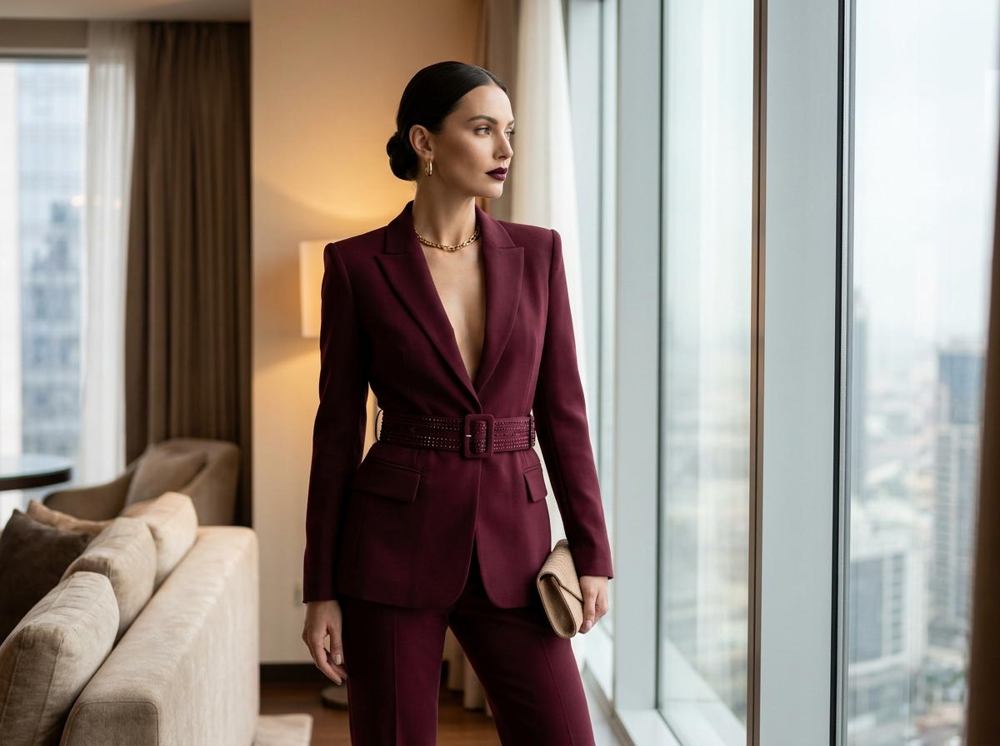

Деловое ИИ-фото: 10 промптов для нейросети

Хороший деловой портрет сложно снять без фотографа, подходящей локации и десятков дублей. Генерация помогает быстро получить убедительный кадр для профиля, презентации, сайта или соцсетей, сохранив нужное настроение и стиль.
В подборке — 10 промптов для нейросети: от офисного портрета с книгами до luxury-съёмки у окна. Здесь есть строгие костюмы, мягкий lifestyle, студийный свет, нейтральные фоны и инструкции для работы с референсом лица.
Как сгенерировать такое фото: пошагово
Нужен снимок анфас при ровном свете, лицо в кадре целиком, без тёмных очков и головных уборов. Разрешение от 1000 пикселей по короткой стороне. Чем чётче исходник, тем точнее модель повторит черты.
Выберите сценарий ниже и нажмите «Копировать» — текст уйдёт в буфер целиком, вместе с командой сохранения внешности. Эта команда стоит первой строкой и отвечает за то, чтобы на выходе было ваше лицо, а не случайное.
Кнопка «Сгенерировать» рядом с каждым промптом открывает модель в новой вкладке. Nano Banana Pro работает с референсом лица — в отличие от моделей, которые генерируют портрет с нуля и узнаваемость теряют.
Промпт — в поле ввода, портрет — через загрузку референса. Порядок значения не имеет, но без референса команда сохранения внешности работать не будет: модели нечего сохранять.
Для сторис и ленты берите 9:16, для превью и обложек — 4:3. Первый результат редко идеален: если поза или свет ушли не туда, поправьте соответствующую часть промпта и запустите заново. Обычно хватает двух-трёх итераций.
10 промптов для генерации
1. Офисный портрет с книгами
Строго сохранить внешность по загруженному референсу: черты лица, пропорции, мимику и текстуру кожи без изменений. Фотореалистичный студийный портрет в эстетике документальной lifestyle-фотографии, естественная RAW-обработка и высокая детализация. Женщина сидит в офисе в удобном кресле с резными подлокотниками. Вертикальная композиция от колен до макушки, камера на уровне глаз. Корпус слегка развёрнут к объективу, ноги скрещены, поза уверенная и открытая. Одной рукой она держит очки у груди, вторая спокойно лежит на подлокотнике. Взгляд прямой, направлен точно в объектив. На ней кремовая блузка с V-образным вырезом и длинными рукавами, чёрные прямые брюки. Волосы собраны в аккуратный объёмный пучок, несколько прядей обрамляют лицо. Средние серьги, натуральный макияж, матовая кожа и нюдовая помада. На заднем плане — высокие книжные шкафы, заполненные книгами. Мягкий реалистичный свет, натуральная цветокоррекция, подробная фактура ткани и интерьера.
2. Белый костюм в студии

Строго сохранить внешность по загруженному референсу: черты лица, пропорции, мимику и текстуру кожи без изменений. Вертикальный портрет 9:16 в белой студии, экстремально крупный план по пояс. Девушка сидит расслабленно, опираясь на одну руку; вторая рука поднята вверх. Она не смотрит в объектив, взгляд направлен в сторону. На ней классический белый oversize-костюм, небрежно застёгнутый на одну-две пуговицы. Волосы гладко собраны в пучок, кожа ровная и мягко подсвеченная, лёгкий макияж, пышные ресницы, ногти с французским маникюром. Кинематографичная подача, лёгкое плёночное зерно, ультрареализм, разрешение 8K. Камера Phase One IQ4, объектив 80 мм, диафрагма f/2.8–f/4. Резкость на лице и переднем плане — поднятой руке и воротнике. Смешанный баланс белого с сохранением тёплых и слегка зеленоватых оттенков, RAW и максимальный динамический диапазон. Исключить плоский свет, пересветы, провалы в тенях, размытие лица, пластиковую кожу, лишние пальцы, артефакты и текст.
3. Красный костюм и серьги

Строго сохранить внешность по загруженному референсу: черты лица, пропорции, мимику и текстуру кожи без изменений. Сделайте фотореалистичный портрет стильной женщины в три четверти, сидящей в уверенной спокойной позе. На ней ярко-красный приталенный пиджак с подходящими брюками и чёрная водолазка под ним. Образ дополнен крупными ажурными серьгами. Волосы убраны вверх, несколько свободных прядей мягко обрамляют лицо. Съёмка проходит в студии на нейтральном тёмно-сером фоне. Используйте тёплое рассеянное студийное освещение, кинематографичную цветокоррекцию и малую глубину резкости. Выражение лица элегантное и уверенное, взгляд выразительный, глаза проработаны с резкой детализацией. Макияж натуральный, ретушь кожи аккуратная, без эффекта пластика. Передайте реалистичную фактуру ткани пиджака, водолазки и аксессуаров. Высокое разрешение, натуральные пропорции, реалистичная кожа, чистые руки, точная анатомия и дорогая editorial-эстетика.
4. Книга и светлый blazer

Строго сохранить внешность по загруженному референсу: черты лица, пропорции, мимику и текстуру кожи без изменений. Luxury editorial, фотореалистичная студийная съёмка женщины в светлом дизайнерском кресле или на белом диване. Корпус слегка повернут к камере, поза расслабленная и уверенная. Одна рука мягко поддерживает подбородок или находится у лица, вторая держит раскрытую книгу на коленях. Выражение тёплое, интеллигентное и спокойное, на губах естественная лёгкая улыбка. На женщине молочно-белый oversize-blazer с чёткой линией плеч и дорогим кроем; под ним светлый топ-комбинация или тонкая майка с мягким V-образным вырезом. Минималистичный женственный образ без лишнего декора. Светлая студия, чистый фон, мягкий направленный свет, реалистичная кожа, естественная мимика и детальная фактура ткани и бумаги. Композиция напоминает дорогой lifestyle-эдиториал: ощущение внутреннего комфорта, утончённости и уверенности, высокая детализация, натуральная цветопередача.
5. Мужской портрет у стены

Строго сохранить внешность по загруженному референсу: черты лица, пропорции, мимику и текстуру кожи без изменений. Фотореалистичный fashion-editorial портрет мужчины в минималистичном современном интерьере. Он стоит почти фронтально или в лёгком полоборота у светлой стены, плечом опирается на белую колонну или выступ. Руки скрещены на груди, поза собранная, спокойная и уверенная. Взгляд направлен прямо в объектив либо немного в сторону. Выражение серьёзное, но мягкое, с ощущением интеллекта и внутреннего равновесия. На мужчине чёрный трикотажный свитер плотной фактуры, без принтов и декора; из-под него виден белый воротник рубашки или тонкая белая сорочка. Свитер сидит по фигуре, но не обтягивает. Светлый интерьер, мягкое естественное освещение, чистая композиция, реалистичная текстура вязки, ткани и кожи. Сдержанная палитра, аккуратный layered-look, высокая детализация, натуральная ретушь, резкость на глазах и профессиональная журнальная цветокоррекция.
6. Элегантный портрет с улыбкой

Строго сохранить внешность по загруженному референсу: черты лица, пропорции, мимику и текстуру кожи без изменений. Создайте реалистичный портрет женщины по пояс на нейтральном светло-сером фоне. Она стоит или сидит в уверенной элегантной позе, одна рука находится у воротника, на лице искренняя спокойная улыбка. На ней белое бандажное платье без бретелей, поверх небрежно накинут тёмно-синий пиджак. Образ дополнен серебристым колье, серьгами и браслетом. Макияж естественный, кожа выглядит натурально, без чрезмерного сглаживания. Мягкий студийный свет, умеренный контраст, натуральная цветокоррекция и малая глубина резкости. Главный фокус — на глазах и лице, фон слегка размытый. Используйте объектив с фокусным расстоянием 50–85 мм, высокое разрешение и детальную передачу фактуры кожи, волос, металла и ткани. Сохраните естественные пропорции тела, правильную анатомию рук и живую мимику, избегайте пластиковой кожи и чрезмерной ретуши.
7. Чёрный жакет и книги

Строго сохранить внешность по загруженному референсу: черты лица, пропорции, мимику и текстуру кожи без изменений. Фотореалистичная студийная fashion-editorial сцена: женщина сидит или полусидит на нейтральном фоне, корпус немного развёрнут к камере. Один локоть опирается на колено или подлокотник, ладонь аккуратно поддерживает подбородок; другой рукой она держит стопку книг на уровне талии или коленей. Выражение мягкое, интеллигентное и слегка задумчивое, с едва заметной уверенной улыбкой. На ней чёрный приталенный жакет с чёткой линией плеч, плотной матовой тканью и аккуратными пуговицами на манжетах. Силуэт строгий, современный и дорогой. Свет рассеянный, студийный, без жёстких теней; фон чистый, глубина резкости небольшая. Передайте фактуру бумаги, костюмной ткани, волос и кожи, сфокусируйтесь на глазах. Общая эстетика — спокойный luxury lifestyle-эдиториал, натуральная цветопередача, реалистичная мимика, точная анатомия рук и высокая детализация.
8. Костюм в клетку у окна

Строго сохранить внешность по загруженному референсу: черты лица, пропорции, мимику и текстуру кожи без изменений. Вертикальная фотореалистичная fashion-editorial фотография взрослого человека в полный рост. Модель стоит в светлом минималистичном интерьере у большого окна и слегка опирается плечом на белую стену или оконный откос. Одна нога перекрещена перед другой, руки находятся в карманах брюк, корпус немного развёрнут в сторону камеры. Голова повернута вбок, взгляд спокойный, задумчивый и чуть отстранённый. На модели классический костюм в тонкую клетку: пиджак tailored fit из плотной дорогой ткани с реалистичной текстурой, аккуратный крой и слегка приталенный силуэт. Допустима сдержанная мужская или унисекс-эстетика. Используйте мягкий дневной свет из окна, светлую интерьерную палитру и умеренное размытие фона. Поза естественная, без напряжения, композиция журнальная, детали костюма и обуви резкие, кожа и лицо фотореалистичные.
9. Молочный blazer в профиль

Строго сохранить внешность по загруженному референсу: черты лица, пропорции, мимику и текстуру кожи без изменений. Фотореалистичная fashion-editorial фотография женщины, стоящей в полоборота на чистом светлом фоне. Поза спокойная, собранная и очень элегантная; руки мягко сложены перед грудью или ладони соединены в деликатном жесте. Взгляд направлен в сторону и немного вверх, выражение лица задумчивое, интеллигентное и уверенное, без излишней эмоциональности. На ней белый или молочно-сливочный oversized-blazer с чётким плечом, безупречным кроем и плотной дорогой тканью. Пиджак свободно сидит и слегка спущен по фигуре, создавая лаконичный luxury-силуэт. Под ним — светлое платье-комбинация, топ или тонкий слой платья в тон, почти не заметный под жакетом. Мягкий студийный свет, чистый фон, натуральная кожа, реалистичная фактура ткани, аккуратная глубина резкости и журнальная цветокоррекция. Уберите лишний декор, искажения рук, неестественную мимику и чрезмерную ретушь.
10. Бордовый костюм у окна

Строго сохранить внешность по загруженному референсу: черты лица, пропорции, мимику и текстуру кожи без изменений. Luxury fashion editorial, женщина стоит у высокого окна в элегантной квартире. На ней бордовый брючный костюм с приталенным кроем, структурированными плечами и жакетом с глубоким V-образным вырезом. Талия подчёркнута широким декоративным ремнём, образ дополнен золотой цепочкой и золотыми серьгами. В руке небольшой бежевый клатч с фактурной поверхностью. Волосы гладко зачёсаны назад и собраны в аккуратный низкий пучок, на губах выразительная бордовая помада. Женщина смотрит в сторону, за окно, выражение лица спокойное и уверенное. Полный рост, вертикальная композиция, мягкий естественный дневной свет, за окном размытый городской пейзаж, интерьер выдержан в тёплых нейтральных оттенках. Используйте кинематографичный свет, резкие детали костюма и аксессуаров, натуральную текстуру кожи, малую глубину резкости и объектив 85 мм. Исключить размытие, низкое качество, мультяшность, деформации лица, лишние пальцы, плохую анатомию, дублирование тела, пластиковую кожу, перенасыщенность, водяные знаки, текст и логотипы.
Что важно учесть в этом стиле
Деловое ИИ-фото держится на ясной задаче: портрет для профиля, кадр для сайта или имиджевая съёмка для презентации требуют разной композиции. Сначала задайте формат, крупность плана и направление взгляда, а уже затем описывайте одежду и интерьер.
Для узнаваемого результата добавляйте референс лица и отдельно прописывайте, какие черты нельзя менять. Формулировки про естественную кожу, живую мимику и точную анатомию помогают избежать пластикового эффекта. Камера и фокусное расстояние полезны как ориентир для перспективы, но не гарантируют точную имитацию конкретной модели.
Идеи для вариаций
- Замените офис или студию на переговорную комнату, библиотеку, лобби отеля или домашний кабинет.
- Сделайте версию для аватара: кадр по плечи, нейтральный фон и прямой взгляд.
- Добавьте сезонность: шерстяной костюм, летний льняной жакет или тонкий трикотаж.
- Поменяйте настроение света на холодное утреннее, вечернее золотистое или контрастное боковое.
- Для командного сайта соберите серию в одной палитре, меняя только позы и аксессуары.
Как собрать свой промпт
Разделите описание на пять частей: персонаж и внешность, поза и эмоция, одежда, локация со светом, технические параметры. Так нейросети проще расставить приоритеты. В начале укажите тип кадра и ориентацию, например «портрет по пояс, вертикальный формат 4:5».
Затем уточните детали, которые нельзя потерять: положение рук, направление взгляда, фактуру ткани и цвет фона. В конце добавьте объектив, диафрагму, глубину резкости и негативные условия. Если лицо получилось неточным, не переписывайте весь запрос: замените референс, уменьшите стилизацию и сделайте 4–8 генераций с одинаковым описанием.
Ошибки, из-за которых кадр не получается
- Слишком много задач в одном кадре. Если одновременно просить сложный интерьер, несколько предметов в руках и динамичную позу, детали начинают конфликтовать.
- Не задан формат. Без указания вертикальной или горизонтальной композиции модель может обрезать руки, ноги или аксессуары.
- Размытые требования к лицу. Референс лучше сопровождать конкретным запретом на изменение формы глаз, носа, губ и линии челюсти.
- Противоречивый свет. Смешение «жёсткого контрового» и «мягкого равномерного» освещения часто даёт грязные тени.
- Отсутствует негативный промпт. Для делового портрета отдельно исключайте лишние пальцы, логотипы, текст, пластиковую кожу и искажения костюма.
Частые вопросы
Как сделать такое ИИ-фото бесплатно?
Попробуйте Kandinsky, Шедеврум, Krea AI или Arena.ai: у них есть бесплатный доступ, но лимиты, очередь и качество могут меняться. Работа с референсом лица поддерживается не одинаково: где-то доступна загрузка изображения, где-то только текстовое описание или ограниченная стилизация. Для точного делового портрета понадобится несколько попыток, а бесплатные режимы могут уменьшать разрешение и хуже сохранять идентичность.
Как сохранить сходство с человеком на фото?
Загрузите чёткий референс без фильтров, где лицо хорошо освещено и не закрыто волосами или очками. В промпте опишите сохранение формы глаз, носа, губ, скул, подбородка и естественных пропорций. Не добавляйте слишком сильную стилизацию и не меняйте одновременно возраст, ракурс и выражение лица.
Какой формат выбрать для делового портрета?
Для профиля обычно подходят 1:1 и 4:5, для сторис и вертикальных публикаций — 9:16. Если нужен кадр для сайта или презентации, заранее оставьте свободное место под текст. Для полного роста выбирайте вертикальную композицию и явно указывайте, что в кадре должны полностью помещаться ноги и обувь.
Почему нейросеть искажает руки и одежду?
Руки сложнее всего отрисовать в непривычной позе, особенно когда человек держит книгу, очки или клатч. Упростите жест, опишите положение каждой руки отдельно и добавьте негативные условия: лишние пальцы, слияние кистей, деформированные пуговицы и разорванную ткань. После этого выберите лучший вариант из нескольких генераций и при необходимости исправьте детали отдельным редактированием.